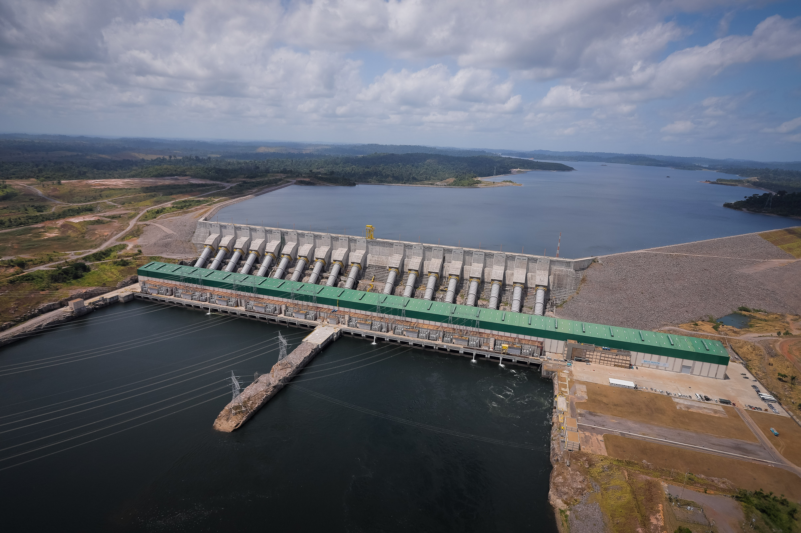

Hydropower energy is like using the power of water to make things work. Imagine a big waterfall with water rushing down really fast. People can put special machines in the water that use its energy to spin around, just like a water wheel or a spinning top. So, hydropower is like having a super fun and strong friend, water, that helps us make electricity by playing and spinning around!
In Brazil, while big dams like the

Belo Monte
and
 Itaipu brought power to cities and industries, they've also caused problems. Indigenous communities have faced displacement
from their lands, leading to cultural and social disruptions. The dams can harm the Amazon rainforest, disrupting the natural flow of
rivers and impacting local plants and animals. Sometimes, the benefits of this energy don't reach everyone equally, with rural and
marginalized communities often left with the negative effects while others reap the rewards.
Itaipu brought power to cities and industries, they've also caused problems. Indigenous communities have faced displacement
from their lands, leading to cultural and social disruptions. The dams can harm the Amazon rainforest, disrupting the natural flow of
rivers and impacting local plants and animals. Sometimes, the benefits of this energy don't reach everyone equally, with rural and
marginalized communities often left with the negative effects while others reap the rewards.